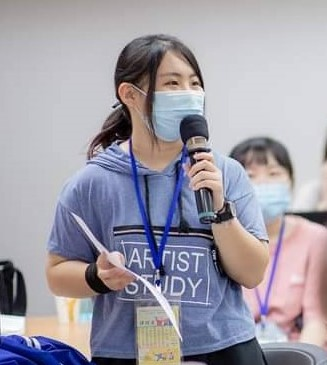
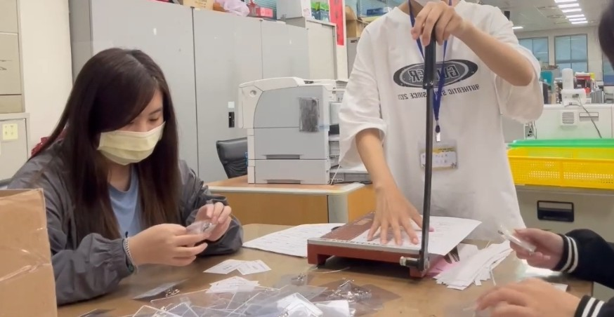

● 2026 台灣積體電路製造股份有限公司-DIF 機台基礎
● 2025 勞動部勞動力發展署-青年菁英學苑
● 2025/08至2026/01 靜宜大學 資管系 專業服務學習教學助理
● 2024/09至2025/06 班級學藝
● 2024/02至2024/06 靜宜大學 資管系 設計思考與實踐課程助理
● 2023/09至2024/06 班級學藝
● 2022/10 電腦視覺人工智慧工作坊
● 2022/08/17至2022/08/09內政部移民署 新住民子女多元文化在地創生培育營
● 2022/07/25至2022/07/29 新住民子女國際職場體驗暨語文增能活動
● 2021/09至2022/01 壽山高中 手語社第十屆 總務股長
● 2020/09至2022/06 壽山高中 九字糾察隊

● 2025/09至今 靜宜大學 資管系辦 工讀生
● 2025/07-2025/08 桃園市八德區公所 民政課 工讀生
● 2025/02至今 靜宜大學 資訊處 工讀生
● 2023/10至今 靜宜大學 住宿組 工讀生
